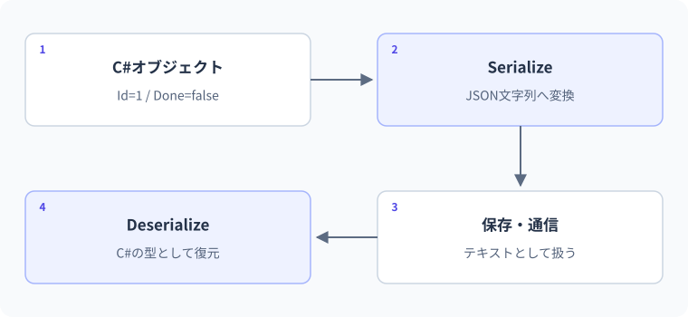

ファイルとJSON
オブジェクトとJSONの変換。
アプリの変数とディスク上のファイルは別物です。まず値をJSON文字列へ変換し、その後で保存場所、読み込み、復元後の検証へ進みます。
要点
- JSONへ変換して復元する
- ファイル不存在と破損を区別する
string json = JsonSerializer.Serialize(value);C#の値とJSON文字列を行き来する
ファイル保存では、文字列をJSONへ変換できることだけでなく、どこへ保存するか、読み出したデータが有効か、破損時にどうするかまでが一つの処理です。ファイル操作と業務データの検証を分離し、データを黙って失わない設計を学びます。
メモリと保存先を区別する
Listへ追加したデータは、通常アプリの終了で失われます。再起動後も必要ならファイルやデータベースへ保存します。ファイルI/Oは存在しないパス、アクセス権、容量不足などで失敗します。File.Existsを先に確認しても、その直後に状態が変わる可能性があるため、I/O自体の例外処理も考えます。
JSONはデータの交換形式
System.Text.JsonのJsonSerializer.Serializeでオブジェクトを文字列へ変換し、Deserialize<T>で復元します。既定の設定では主にpublicプロパティを扱います。文字列の見た目を手で連結してJSONを作ると、引用符や改行のエスケープで壊れるため、シリアライザーを使います。
シリアル化は構造を変換する処理
JsonSerializer.SerializeはオブジェクトからJSON文字列を作り、Deserialize<T>はJSONから指定した型のデータを復元します。プロパティ名、大文字小文字、命名規則、フィールドを含める設定などに規則があります。コンソールでの既定設定とWebで用いられる設定が同じとは限らないため、データ交換の契約を明示します。
この単元ではDTOをrecordなどで定義し、保存形式とアプリ内部の操作を分けます。JSONはオブジェクトの振る舞いやメソッドの処理まで保存するものではありません。参照の循環や多態的な型をそのまま保存したい場合は追加設計が必要なので、最初は単純なデータの形を保ちます。
オブジェクトをJSONにして復元する
using System.Text.Json;
var session = new StudyLog("CSharp", 30);
string json = JsonSerializer.Serialize(session);
Console.WriteLine(json);
var restored = JsonSerializer.Deserialize<StudyLog>(json)
?? throw new InvalidOperationException("データがありません");
Console.WriteLine(restored.Minutes);
public record StudyLog(string Subject, int Minutes);この最小例は、メモリ上のオブジェクトとJSON文字列を相互に変換します。Serializeだけでディスクへ保存されるわけではありません。
- 1C#の値
StudyLog("CSharp", 30) - 2Serialize
JSONの文字列を作る - 3Deserialize
文字列から値を復元する - 4結果を読む
Minutesは30
ファイルへの書き込みは、この変換とは別にFile.WriteAllTextなどで行います。まず変換の入出力を確認すると、ファイルの場所の問題と混同せずに調べられます。
想定出力
処理順
- レコードをJSON文字列へ変換する。
- Deserializeは指定した型へ読み込む。
- nullの結果を拒否してからMinutesへアクセスする。
書き込むファイルの場所を決める
相対パス・作業ディレクトリ・文字コード
File.WriteAllText("data.json",json)の相対パスは、ソースファイルがある場所ではなく、実行プロセスの現在の作業ディレクトリを基準に解決されます。IDE、ターミナル、サービスで起動方法を変えると保存先が変わる原因になります。Environment.CurrentDirectoryやPath.GetFullPathで実際の場所を確認します。
Path.Combineでパスを組み立て、存在しない保存フォルダーは必要に応じてDirectory.CreateDirectoryで用意します。文字列からバイト列への変換には文字コードが関係します。外部と交換するファイルではUTF-8などの取り決めを明示します。利用者が入力した任意のパスをそのまま結合して書き込む設計は、許可した領域の外へアクセスしない検証も必要です。
"logs.json"のような相対パスでは、どのフォルダーを基準にするかが必要です。
logs.json基準フォルダーと合わせて場所が決まる
場所全体を指定する実行場所が変わっても同じ対象を示す
相対パスは通常、実行時のカレントディレクトリを基準に解釈されます。Program.csのある場所や実行ファイルの場所と必ず一致するわけではありません。
JSONを読み、欠損と値の範囲を検証する
using System.Text.Json;
foreach (string json in new[] { "{\"Title\":\"C#\",\"Count\":2}", "null", "{\"Title\":\"\",\"Count\":-1}" })
{
BookData? book = JsonSerializer.Deserialize<BookData>(json);
if (book is null || string.IsNullOrWhiteSpace(book.Title) || book.Count < 0)
{
Console.WriteLine("データ不正");
continue;
}
Console.WriteLine($"{book.Title}: {book.Count}");
}
public record BookData(string? Title, int Count);出力
| 段階 | 値・状態 | 読み解き |
|---|---|---|
| 構文を読む | 最初のJSONはBookDataへ変換 | 変換と検証は別 |
| 最初の値 | Title=C#、Count=2 | 必要条件を満たす |
| JSON null | 復元結果がnull | プロパティへ触れる前に拒否 |
| 空タイトル・負の件数 | オブジェクトとしては復元可能 | 業務検証で拒否 |
実例：タスクをJSONへ変換して復元する
ブラウザ内実行にも適した、ディスクを使わない変換だけの例です。
using System.Text.Json;
var task = new TaskItem(1, "Review", false);
string json = JsonSerializer.Serialize(task);
Console.WriteLine(json);
TaskItem? restored = JsonSerializer.Deserialize<TaskItem>(json);
Console.WriteLine(restored?.Title ?? "復元なし");
record TaskItem(int Id, string Title, bool Done);このコードの図解：オブジェクトとJSONの変換

想定出力
{"Id":1,"Title":"Review","Done":false}
Review処理と値の変化
- Serializeプロパティの値をJSONへ変換する
- string jsonこの時点では単なる文字列として保持する
- Deserialize指定したTaskItem型へ復元する
jsonを"null"にすると、restoredはnullになります。後続処理でnullを考慮する必要があります。
読み込み失敗と不正データから守る
復元と検証は別
JSONとして読めても業務上正しいとは限りません。必須値・範囲・重複IDなどを検証します。ファイルがない初回起動と、ファイルが壊れた異常をどちらも空データとして扱うと、元データを上書きして失う恐れがあります。制作課題では読み込み失敗時は中断し、勝手に初期化しません。
構文が正しいJSONでも業務データとして不正な場合
JSONのnullをDeserializeすると、参照型の結果がnullになることがあります。必要なプロパティが欠けていても設定や型によって既定値が入る場合があります。stringを非nullableで宣言しただけで、外部データのすべての欠損や不正値が自動的に拒否されると考えてはいけません。
読み出し後にタイトルの空白、負の件数、重複ID、対応していない保存形式のバージョンなどを検査します。「JSONとして読める」「必要項目がある」「業務ルールを満たす」を順に確認すると、失敗理由を分けて表示できます。ブラウザから来るDTOも同じ考え方です。
ファイルを読み込んで復元する処理には、異なる失敗の段階があります。
- 1ファイルを読む
存在・権限・I/Oを確認 - 2JSONを解釈
JSONとして読めるか - 3型へ復元
型やnullを確認 - 4ルールを検証
学習時間などの値が有効か - 5採用する
有効なデータだけを使う
たとえばMinutesが負でも、型に収まる数値ならJSONから復元できる場合があります。復元後に業務ルールを検証し、不正な状態をそのまま採用しないようにします。
読めないデータを空データで上書きしない
初回でファイルが存在しないことと、既存ファイルが壊れて読めないことは別です。catchですべて空Listへ置き換えてから保存すると、復旧できたはずのデータを失うおそれがあります。破損やアクセス権限の問題は利用者へ伝え、元ファイルを保持したまま復旧方法を選びます。
保存途中で停止すると、直接上書き中のファイルが中途半端になる可能性があります。同じ保存先領域の一時ファイルへ書いてから置き換える、バックアップを保持する、DBのトランザクションへ移すなどの選択肢があります。ただしファイルの置き換えだけで全OS・全ファイルシステムのクラッシュ耐性や同時書き込みが保証されるわけではありません。学習用の単一プロセス保存と本番の永続化を区別します。
C#仕様の整理
| 観点 | C#での扱い | 読み方・設計上の要点 |
|---|---|---|
| JSONライブラリ | System.Text.Jsonが標準ライブラリにある | 命名規則とnullを契約化 |
| パス | Path/File/Directory等 | 現在の作業ディレクトリを確認 |
| 復元後の検証 | 同様に業務ルールを明示検証 | 型が付いていても外部入力を信用しない |
| リソース | using/await using | 開いたハンドルの所有者を決める |
よくある間違いと修正
復元結果のnullを無視してアクセスする
修正箇所: Deserialize直後の境界
修正前
using System.Text.Json;
var data = JsonSerializer.Deserialize<Item>("null");
Console.WriteLine(data!.Name);
public record Item(string Name);修正後
using System.Text.Json;
var data = JsonSerializer.Deserialize<Item>("null");
if (data is null || string.IsNullOrWhiteSpace(data.Name))
{
Console.WriteLine("有効なデータがありません");
return;
}
Console.WriteLine(data.Name);
public record Item(string? Name);修正後の確認
- null→説明を表示
- Nameが空→説明を表示
- 正常なName→表示
基礎・標準・応用演習
C#実行環境：.NET 10 SDK
基礎演習
BookData("CSharp", 2)をJSON化し、BookDataとして復元してTitleとCountを表示します。追加でFile.WriteAllText/ReadAllTextによる保存も手元で試せます。
開始コード
using System.Text.Json;
// BookDataのシリアル化と復元を行う。入力例・前提条件
BookDataのTitle=CSharp、Count=2。まずメモリ上でJSON化と復元を行う。
考え方のヒント
Serializeが返す文字列と、Deserializeが返すオブジェクトを別の変数へ保存する。
解答例と確認ポイント
using System.Text.Json;
var book = new BookData("CSharp", 2);
string json = JsonSerializer.Serialize(book);
var restored = JsonSerializer.Deserialize<BookData>(json)
?? throw new InvalidOperationException("復元失敗");
Console.WriteLine($"{restored.Title}: {restored.Count}");
public record BookData(string Title, int Count);| 解答で確認する条件 | 確認方法 |
|---|---|
| CSharp: 2と表示される。 | コードと想定結果を照合 |
| JSONへの変換とファイルへの保存が別操作だと説明する。 | コードと想定結果を照合 |
処理と結果の読み解き
保存前の型付きデータからJSON文字列を作り、それを型へ読み戻す。復元結果がnullでないことを確認してTitleとCountを表示する。
よくある別解と選び方
ファイルへ書いてから読む方法は追加課題。変換だけとディスクへの保存を別の段階として検査する。
よくある間違いと確認箇所
シリアル化しただけでファイルへ保存されたと考えない。書き込みAPIを呼ぶまでは文字列がメモリ上にある。
実務例：通信や永続化では、データ形式への変換と実際の入出力を分けて扱う。
標準：JSONの名前の契約を明示する
書き出すJSONの名前をcamelCaseにし、同じ設定でBookを復元して値が一致することを表示します。
- JsonSerializerOptionsを共有する
- PropertyNamingPolicyをCamelCaseにする
- 比較する型はrecordにする
開始コード
// 標準：JSONの名前の契約を明示する
// 課題とテストケースを読んで、自分で実装してください。
入力例・前提条件
Bookの値をcamelCaseのJSON名で出し、同じ設定で読み戻す。
考え方のヒント
JsonSerializerOptionsの命名ポリシーを、書く側と読む側へ渡す。
解答例と確認ポイント
using System.Text.Json;
var options = new JsonSerializerOptions { PropertyNamingPolicy = JsonNamingPolicy.CamelCase };
var original = new Book("CSharp", 2);
string json = JsonSerializer.Serialize(original, options);
Console.WriteLine(json);
var restored = JsonSerializer.Deserialize<Book>(json, options);
Console.WriteLine(original == restored);
public record Book(string Title, int Count);想定出力
- 書き出しと読み出しで同じ契約を使う。
- recordなので値が同じかを比較できるが、参照型コレクションを含む場合の比較規則は別途確認する。
- 設定を途中で変更して互換性を壊さないよう、保存形式の変更はバージョンとして管理する。
| 入力 / 条件 | 期待結果 |
|---|---|
| Title=CSharp,Count=2 | 一致True |
| Count=0 | 値は保存できる。業務上の許可は別に判定 |
| 不正なJSON | JsonException。空データへ黙って置換しない |
処理と結果の読み解き
C#のプロパティ名とJSON上の名前が異なり得る。両側で対応付けの規則を揃えることで、値を元の型へ正しく戻せる。
よくある別解と選び方
JsonPropertyNameで個々の項目名を固定する方法もある。外部契約が特別な名前なら個別指定を検討する。
よくある間違いと確認箇所
Web既定の設定と、JsonSerializerを直接呼ぶときの既定を同一視しない。実際に渡したオプションを確認する。
実務例：外部APIとの項目名の対応や、保存形式の互換性を明示的に管理する。
応用：一時フォルダーで保存と復元を試す
他のファイルを上書きしない専用の一時フォルダーを作り、学習時間30をJSON保存して読み直します。最後に今回作ったフォルダーだけを削除します。
- Path.GetTempPathとGuidで専用パスを作る
- try/finallyで後片付けする
- 入力された任意のパスは受け取らない
開始コード
// 応用：一時フォルダーで保存と復元を試す
// 課題とテストケースを読んで、自分で実装してください。
入力例・前提条件
自分の例だけが使う一時フォルダーへ学習時間30を保存し、読み戻して最後に削除する。
考え方のヒント
生成した一意のフォルダー名を保持し、後片付けの対象もその場所へ限定する。
解答例と確認ポイント
using System.Text.Json;
string directory = Path.Combine(Path.GetTempPath(), "csharp-lab-" + Guid.NewGuid().ToString("N"));
Directory.CreateDirectory(directory);
try
{
string path = Path.Combine(directory, "study.json");
File.WriteAllText(path, JsonSerializer.Serialize(new Study(30)));
var data = JsonSerializer.Deserialize<Study>(File.ReadAllText(path));
if (data is null || data.Minutes < 0) throw new InvalidDataException("学習時間が不正です");
Console.WriteLine($"復元: {data.Minutes}分");
}
finally
{
Directory.Delete(directory, recursive: true);
}
public record Study(int Minutes);想定出力
- 固定名の既存ファイルを上書きしないよう今回専用のフォルダーを作る。
- 読込後にもnullと業務上の値を確認する。
- 学習用の一時ファイル実験であり、本番データを保存するコードではない。実運用では削除失敗が元の例外を隠す問題やバックアップ方針も設計する。
| 入力 / 条件 | 期待結果 |
|---|---|
| Minutes=30 | 復元30分 |
| Minutes=0 | 復元0分 |
| Minutes=-1 | InvalidDataException、finallyで後片付け |
処理と結果の読み解き
JSONをファイルへ書き、再び内容を読み、値30を確かめる。finallyで自分が作った資源を片付けるが、重要なフォルダーを削除対象にしない。
よくある別解と選び方
練習用の固定フォルダーを使う場合は上書きや残存ファイルの方針を別に決める。一意な場所なら他の実験と衝突しにくい。
よくある間違いと確認箇所
Path.GetTempPathが返す共有の一時領域そのものを再帰削除しない。今回作った子フォルダーだけを扱う。
実務例：ファイル操作は副作用があるため、保存先・上書き・失敗時・後片付けを一組で考える。
確認問題
理解チェックと公式資料
- 保存パスを実際に確認できる
- JSON変換と業務検証を分けられる
- nullと破損JSONを区別できる
- 読み込み失敗でデータを消さない
公式一次情報
公式資料
確認日：2026年9月14日。本文の理解を補うための資料です。学習対象は.NET 10 / C# 14です。パッチ番号は固定しません。